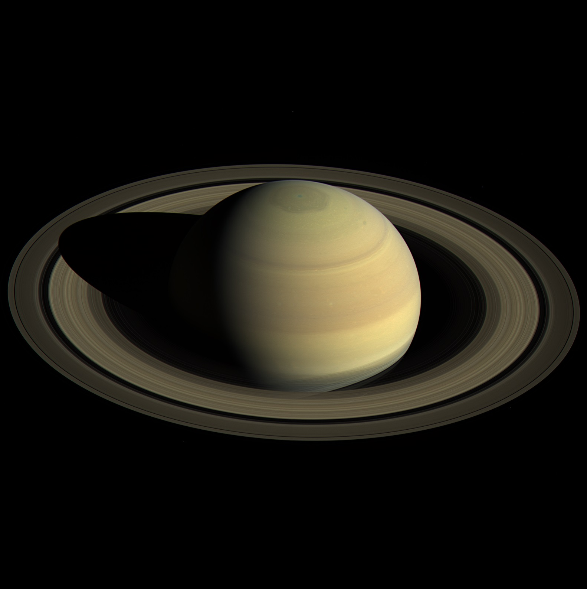

Сатурн е шестата планета от Слънчевата система. Тя е газов гигант и е втора по големина в Слънчевата система след Юпитер. Сатурн е известен най-вече с пръстените си, съставени от лед и космически прах.
Сатурн е съставен от водород, хелий и следи от други елементи. Вътрешността на планетата е съставена от малко ядро от скали и лед, оградено от тънък слой метален водород, който е ограден от дебел външен слой газове. Скоростта на вятъра на Сатурн може да достигне до 1800 km/h, много по-бързо от ветровете на Юпитер. Планетата има магнитно поле със средна сила между това на Земята и много по-силното магнитно поле около Юпитер.
Сатурн има голям брой естествени спътници (60 известни, изключвайки огромния брой тела, съставящи пръстените), 52 от които са именувани. Някои от спътниците са много малки: 34 са по-малки от 10 km в диаметър, а други 13 по-малки от 50 km в диаметър.

Ето някои данни за Сатурн.
| Отдалеченост от Слънцето | 1 426 666 422 км. |
| Екваториален диаметър | 116 460 км. |
| Плътност спряма водата | 0.69 пъти |
| Продължителност на деня | 10 земни часа |
| Продължителност на годината | 30 земни години |
| Средна температура на повърхността | -178°C |
| Известни луни | 62 |